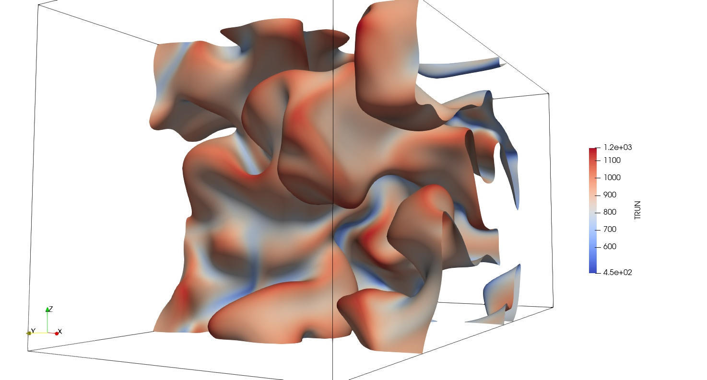

DSMCFoam and Unified Gas Kinetic Scheme is being used to study rarefied gas flows. The Unified Gas Kinetic Scheme is OpenMP parallelized.
The Unified Gas Kinetic Scheme (UGKS) was used to study the effect of compressibility and rarefaction on the development of mixing layers. Different aspects of the flow, such as Kelvin-Helmholtz instability (KHI) and the breakdown of continuum hypothesis, were studied. We identified five different regimes of KHI in the Reynolds-Mach-Knudsen parameter space. An increase in the Knudsen number leads to deviation from the Navier-Stokes-Fourier (NSF) equation. We identified three different regimes of breakdown in continuum hypothesis. Gradient Knudsen number was identified, which scaled the local deviation from continuum hypothesis.
The effect of rarefaction and compressibility inside a lid rotating cylinder is studied. Due to the lid rotation, the number density becomes inhomogeneous. This leads to an insensitivity of the temperature and velocity slip to Mach number under supersonic conditions. Substantial deviations from Navier-Stokes-Fourier (NSF) predictions are observed. This slip alters momentum transfer and thermal transport, with heat flux showing anti-Fourier behavior, where heat transfers counter to the temperature gradient, and the NSF equation significantly overpredicts the driving shear stress. The analysis highlights the emergence of continuum breakdown, marked by a gradient-based local Knudsen number, which effectively delineates regions of continuum and rarefied flow.
Compressible flow simulations are being done using three schemes. The Vogel-Escudier flows have been conducted using OpenFoam simulations. Structured and unstructured finite volume method based Boltzmann solver is also used to turbulent compressible flows in canonical settings. The structured FVM code is MPI-OpenMP hybrid parallelized, whereas the unstrutured code is parrallelized using OpenACC.
Work under progress
A central difference based finite difference Navier-Stokes solver is used to study turbulent reacting flows. Reduced and detailed chemistry are used to simulate chemical reaction of diffferent species involved. This code is MPI parallelized, and is in the process of being parallelized using Oxford Parallel library for Structured mesh solver.
As part of the net-zero objective, countries are looking to move away from fossil fuels. An alternative fuel for combustion is hydrogen and other high hydrogen content fuel such as ammonia. However, because of difference in the physical and chemical properties, combustion characteristic of hydrogen is vastly different from hydrocarbons. Due to the presence of lighter species, HHC fuels are prone to thermodiffusive instabilities, making combustor prone to flashbacks. Moreover, due to the high temperature attained in hydrogen reaction, oxides of nitrogen, known to cause acid rains, could be released. Combustion of ammonia, below the SNCR temperature window is known to prevent formation of NOx. However, combustion of ammonia is slow. Simulations of hydrogen and ammonia combustion are being conducted in various canonical settings such as statistically planar 3D flame, shear flow etc.
